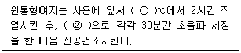
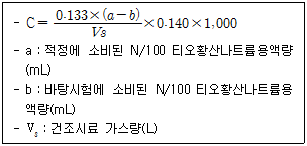
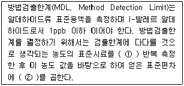
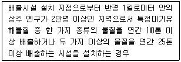
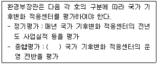

대기환경산업기사 (2014-05-25 기출문제)
1과목: 대기오염개론
1. 포스겐에 관한 설명으로 가장 적합한 것은?
- 분자량 98.9 정도, 비등점은 8.2℃ 정도이며, 수분 존재 시 금속을 부식시킨다.
- 물에 쉽게 용해되는 기체이며, 인체에 대한 유독성은 약한 편이다.
- 시안색의 수용성 기체이며, 인체에 대한 급성 중독으로는 과혈당과 소화기관 및 중추신경계의 이상 등이 있다.
- 비점은 120℃, 융점은 －58℃ 정도로서 공기중에서 쉽게 가분분해 되는 성질을 가진다.
(정답률: 82%)

2. 굴뚝연기의 분산형태 중 환상형(Looping)을 옳게 설명한 것은?
- 바람이 약하고 대기가 안정할 때 생긴다.
- 복사역전이 발달하는 초저녁부터 이른 아침사이에 많이 발생한다.
- 풍속이 매우 강하여 상하층 혼합이 크게 일어날 때 발생한다.
- 상층에는 침강역전, 하층에는 복사역전이 형성되었을 때 발생한다.
(정답률: 61%)
3. 대기 구조에 관한 설명으로 옳지 않은 것은?
- 행성경계층(Planetary Boundary Layer)에서는 지표면의 마찰의 영향을 받기 때문에 풍속이 지표에서 머러질수록 강하게 분다.
- 고도 80km 이상을 열권이라고 하며, 이 권역세서는 분자들이 전리상태에 있기 때문에 전리층이라고도 한다.
- 성층권은 고도 증가에 따라 온도가 상승하는 구간이며, 고도 약 50km 부근에서 오존의 밀도가 최대로 된다.
- 중간권은 기층은 불안하지만 기상현상은 생기지 않는다.
(정답률: 76%)
4. 휘발성유기화합물질(VOCs)은 다양한 배출원에서 배출되는데 우리나라의 경우 최근 가장 큰 부분(총배출량)을 차지하는 배출원은?
- 유기용제 사용
- 자동차 등 도로이동 오염원
- 폐기물처리
- 에너지 수송 및 저장
(정답률: 87%)
5. 층류의 항력을 구할 때 입경(dp)에 따른 커닝험 계수(Cf)의 적용으로 옳은 것은?
- dp ＜ 3μm 인 경우 Cf=1
- dp 》 3μm 인 경우 Cf=1
- 1μm ＜ dp ＜ 3μm 인 경우 Cf=1
- dp=1μm 인 경우 Cf=1
(정답률: 76%)
6. A지역에서 빗물의 pH를 측정한 결과 5.1 이었다. 빗물의 산성우 판정기준이 pH 5.6 이라고 할 때 A지역에서 측정한 빗물의 수소이온농도의 비는 산성우 판정기준의 경우에 비해 어떻게 되겠는가?
- 약 2.3배 높다.
- 약 2.3배 낮다.
- 약 3.2배 높다.
- 약 3.2배 낮다.
(정답률: 87%)
7. DME(Dimethyl Ether) 연료에 관한 설명으로 옳지 않은 것은?
- 산소함유율이 34.8% 정도로 높아 연소시 매연이 적은 편이다.
- 점도가 경유에 비해 높으며, 금속의 부식성이 문제가 된다.
- 고무류와 반응하므로 재질에 주의해야 하며, 세탄가가 55 이상으로 높아 경유를 대체할 수 있다.
- 물성이 LPG와 유사한 특성이 있으며, 발열량은 경유에 비해 낮은 편이다.
(정답률: 55%)
8. 과거의 역사적으로 발생한 대기오염사건 중 London형 Smog 의 기상 및 안정도 조건으로 옳지 않은 것은?
- 무풍상태
- 습도는 85% 이상
- 침강성 역전
- 접지 역전
(정답률: 85%)
9. “수용모델”에 관한 설명으로 가장 거리가 먼 것은?
- 새로운 오염원, 불확실한 오염원과 불법 배출 오염원을 정량적으로 확인 평가할 수 있다.
- 지형, 기상학적 정보 없이도 사용 가능하다.
- 측정자료를 입력자료로 사용하므로 시나리오 작성이 용이하다.
- 현재나 과거에 일어났던 일을 추정하여 미래를 위한 계획을 세울 수 있으나 미래 예측은 어렵다.
(정답률: 81%)
10. 지상 10m 에서의 풍속이 5m/sec이라고 한다면 지상 50m에서의 풍속(m/sec)은 얼마인가? (단, Deacon의 Power Law 적용, 풍속지수는 0.14)
- 5.24
- 6.26
- 7.23
- 8.45
(정답률: 82%)
11. 입자상 오염물질 측정방법을 중량농도법과 개수농도법으로 분류할 때, 다음 중 개수농도법에 해당하는 것은?
- 정전식 분급법
- β-ray 흡수법
- 다단식 충돌판 측정법
- Piezobalance
(정답률: 60%)
12. 다음 중 “내연기관, 폭약, 비료, 필름제조, 금속의 부식, 아크 등” 이 주된 배출관련 업종인 오염물질은?
- NOx
- Zn
- HCHO
- CS2
(정답률: 71%)
13. 프로판가스 120kg을 액화시켜 만든 LPG가 기화될 때 표준상태에서의 용적은?
- 46Sm3
- 61Sm3
- 86Sm3
- 102Sm3
(정답률: 74%)
14. 휘발유를 사용하는 가솔린 기관에서 배출되는 오염물질에 관한 설명 중 가장 거리가 먼 것은? (단, 휘발유의 대표적인 화학식은 Octene으로 가정하고, AFR은 중량비 기준)
- AFR을 10에서 14 로 증가시키면 CO 농도는 감소한다.
- AFR이 16 까지는 HC 농도가 증가하나, 16 이 지나면 HC 농도는 감소한다.
- CO와 HC는 불완전연소시에 배출비율이 높고, NOx는 이론 AFR 부근에서 농도가 높다.
- AFR이 18 이상 정도의 높은 영역은 일반 연소시관에 적용하기는 곤란하다.
(정답률: 83%)
15. 다음 중 오존층 보호를 위한 국제협약은?
- 바젤 협약
- 베엔나 협약
- 람사 협약
- 오슬로 협약
(정답률: 90%)
16. 코리올리 힘에 관한 설명으로 옳지 않은 것은?
- 지구의 자전운동에 의하여 생긴다.
- 운동의 방향만 변화시키고 속도에는 영향을 미치지 않는다.
- 지구의 극지방에서 최소가 된다.
- 힘의 방향은 경도력과 반대이다.
(정답률: 85%)
17. 대기오염의 역사적 사건에 관한 설명으로 옳지 않은 것은?
- 뮤즈계곡사건 - 벨기에 뮤즈계곡에서 발생한 사건으로 금속, 유리, 아연, 제철, 황산공장 및 비료공장 등에서 배출되는 SO2, H2SO4 등이 계곡에서 무풍상태에서 기온 역전 조건에서 발생했다.
- 포자리카 사건 - 멕시코 공업지역에서 발생한 오염사건으로 H2S가 대량으로 인근 마을로 누출되어 기온역전으로 피해를 일으켰다.
- 보팔시 사건 - 인도에서 일어난 사건으로 비료공장 저장탱크에서 MIC 가스가 유출되어 발생한 사건이다.
- 크라카타우 사건 - 인도네시아에서 발생한 산화티타늄 공장에서 발생한 질산미스트 및 황산미스트에 의한 사건으로 이 지역에 주둔하던 미군과 가족들에게 큰 피해를 준 사건이다.
(정답률: 87%)
18. 파장이 5,240Å인 빛 속에서 밀도가 0.85g/cm3 이고, 지름이 0.8μm인 기름방울의 분산면적비 K가 4.1이라면 가시도가 2,414m 되기 위해서는 분진의 농도는 약 얼마가 되어야 하는가?
- 1.23×10-4 g/m3
- 1.44×10-4 g/m3
- 1.62×10-4 g/m3
- 1.79×10-4 g/m3
(정답률: 55%)
19. 이황화탄소에 관한 설명으로 옳지 않은 것은?
- 상온에서 무색, 투명하며 일반적으로 불쾌한 자극성 냄새를 내는 물질이다.
- 이황화탄소는 보통 목탄 또는 메탄과 증기상태의 황을 750~1,000℃에서 반응시켜 제조한다.
- 상온에서도 빛에 의해 서서히 분해되며, 인화되기 쉽다.
- 전도성 및 부식성이 큰 편이다.
(정답률: 50%)
20. 다음 중 가장 낮은 농도의 불화수소(HF)에 쉽게 피해를 받는 지표식물은?
- 장미
- 라일락
- 글라디올러스
- 양배추
(정답률: 91%)
2과목: 대기오염 공정시험 기준(방법)
21. 황분 1.6% 이하를 함유한 액체연료를 사용하는 연소시설에서 배출되는 황산화물(표준산소 농도를 적용받는 항목)을 측정한 결과 710ppm 이었다. 배출가스 중 산소농도는 7%, 표준 산소농도는 4% 이다. 시험성적서에 명시해야 할 황산화물의 농도는?
- 584ppm
- 635ppm
- 862ppm
- 926ppm
(정답률: 71%)
22. 대기오염공정시험기준에서 따로 규정이 없는 한 시약의 조건으로 적합하지 않은 것은?
- HCl：농도 35.0~37.0%, 비중 1.18
- H2SO4：농도 85.0%, 비중 1.80
- HNO3：농도 60.0~62.0%, 비중 1.38
- H3PO4：농도 85.0% 이상, 비중 1.69
(정답률: 55%)
23. 다음은 굴뚝 배출가스 중 다이옥신류 분석을 위한 원통형여지의 사용 전 조치사항이다. ( )안에 가장 적합한 것은?

- ① 600, ② 에탄올 및 노멀헥산
- ① 850, ② 에탄올 및 노멀헥산
- ① 600, ② 아세톤 및 톨루엔
- ① 850, ② 아세톤 및 톨루엔
(정답률: 65%)
24. 배출가스 중의 총탄화수소(THC)의 분석을 위한 장치구성에 관한 설명으로 거리가 먼 것은?
- 시료도관은 스테인레스강 또는 테플론 재질로 시료의 응축방지를 위해 가열할 수 있어야 한다.
- 시료채취관은 스테인레스강 또는 이와 동등한 재질의 것으로 하고 굴뚝중심 부분의 30%범위 내에 위치할 정도의 길이의 것을 사용한다.
- 기록계를 사용하는 경우에는 최소 4회/분이 되는 기록계를 사용한다.
- 영점 및 교정가스를 주입하기 위해서는 삼방밸브나 순간연결장치(Quick Connector)를 사용한다.
(정답률: 63%)
25. 굴뚝, 덕트 등을 통하여 대기중으로 배출되는 가스상 물질을 분석하기 위한 시료채취방법에 관한 설명으로 옳지 않은 것은?
- 채취관은 흡인가스의 유량, 채취관의 기계적 강도, 청소의 용이성 등을 고려하여 안지름 6~25mm정도의 것을 쓴다.
- 도관은 가능한 한 수직으로 연결해야 하고, 부득이 구부러진 관을 쓸 경우에는 응축수가 흘러나오기 쉽도록 경사지게(5° 이상) 한다.
- 도관의 안지름은 도관의 길이, 흡입가스의 유량, 응축수에 의한 막힘, 또는 흡인펌프의 능력 등을 고려하여 4~25mm로 한다.
- 채취부의 수은마노미터는 대기와 압력차가 150mmHg 이하인 것을 쓴다.
(정답률: 75%)
26. 굴뚝 배출가스 중 페놀화합물을 흡광광도법으로 측정할 때 시료용액 4 - 아미노 안티피린용액과 페리시안산 칼륨용액을 가한 경우 발색된 색은?
- 황색
- 황록색
- 적색
- 청색
(정답률: 86%)
27. 다음 계산식은 브롬화합물을 적정법(차아염소산법)으로 분석하여 나타낸 것이다. 이 농도값(C)을 올바르게 설명한 것은?

- 분석시료 중의 총브롬(Br2로 환산)의 농도(mg/m3)
- 분석시료 중의 총브롬(Br2로 환산)의 농도(V/V ppm)
- 분석시료 중의 총브롬(HBr로 환산)의 농도(mg/m3)
- 분석시료 중의 총브롬(HBr로 환산)의 농도(V/V ppm)
(정답률: 74%)
28. 굴뚝에서 배출되는 시안화수소의 질산은 적정법에 쓰이는 시약이 아닌 것은?
- p-디메틸 아미노 벤질리덴 로다닌의 아세톤용액
- 수산화나트륨용액(2W/V%)
- N/100 질산은 용액
- 질산(10V/V%)
(정답률: 66%)
29. 연료용 유류 중의 황함유량을 측정하기 위한 분석방법에 해당하는 것은?
- 전기화학식 분석법
- 광산란법
- 연소관식 공기법
- 광투과율법
(정답률: 69%)
30. 환경대기 중 일산화탄소를 비분산 적외선 분석법(자동연속측정)으로 분석할 경우 측정기의 성능기준으로 옳지 않은 것은?
- 스팬가스를 흘려 보냈을 때 정상적인 지시 변동의 범위는 최대눈금치의 ±2%이내여야 한다.
- 제로교정 및 스팬교정을 한 후 중간눈금부근의 교정용 가스를 주입시켰을 때 이에 대응하는 일산화탄소 농도에 대한 지시오차는 최대눈금치의 ±5%이내여야 한다.
- 시료대기의 유량이 표시된 설정유량에 대하여 ±5% 이내로 변동해도 지시변화는 최대눈금치의 ±2%이여야 한다.
- 대기압변화에 대한 안정성은 대기압의 1% 변화에 대하여 동일시료농도의 측정치의 차가 5% 이내여야 한다.
(정답률: 45%)
31. 원자흡수분광광도법으로 Zn을 분석할 때의 측정파장으로 적합한 것은?
- 213.8nm
- 248.3nm
- 324.8nm
- 357.9nm
(정답률: 62%)
32. 자동기록식 광전분광 광도계의 파장교정에 사용되는 흡수 스펙트럼은?
- 홀뮴유리
- 석영유리
- 플라스틱
- 방전유리
(정답률: 85%)
33. 흡광광도계에서 빛의 강도가 lo의 단색광이 어떤 시료용액을 통과할 때 그 빛의 90%가 흡수될 경우 흡광도는?
- 0.⑤
- 0.2
- 0.5
- 1.0
(정답률: 81%)
34. 환경대기 중 휘발성유기화합물을 고체흡착 열탁착방법으로 분석하고자 할 때, 다음 중 열탈착 장치에 관한 설명으로 옳지 않은 것은?
- 각 흡착관은 분석하기 전에 누출시험을 실시하며, 시료가 흐르는 모든 유로는 분석하기 전 흡착관에 열이나 가스가 공급된 상태에서 누출시험을 실시한다.
- 퍼지용가스는 제로가스와 동등이상의 순도를 지닌 질소나 헬륨가스를 사용한다.
- 일반적으로 흡착관을 저온으로 유지하기 위해서 액체질소, 액체아르곤, 드라이아이스와 같은 냉매를 사용하거나 전기적으로 온도를 강하시킨다.
- 고농도(10ppb이상)시료에서 수분의 간섭으로 인한 분리관과 검출기 피해를 최소화하기 위해 보통 10：1 이상으로 시료분할(Splitting)을 실시한다.
(정답률: 47%)
35. 환경대기 중 가스상 물질의 시료채취 방법에 해당하지 않는 것은?
- 용매포집법
- 용기포집법
- 고체흡착법
- 고온흡수법
(정답률: 80%)
36. 원형굴뚝단면의 반경이 0.5m인 경우 측정점수는?
- 1
- 4
- 8
- 12
(정답률: 73%)
37. 환경대기 내의 아황산가스 농도의 자동 연속 측정방법 중 주 시험방법에 해당하는 것은?
- 용액전도율법
- 불꽃광도법
- 자외선형광법
- 화학발광법
(정답률: 72%)
38. 가스크로마토그래피법의 정량법 중 정량하려는 성분으로 된 순물질을 단계적으로 취하여 크로마토그램을 기록하고 피크의 넓이 또는 높이를 구하는 방법으로써 성분량을 횡축에, 피이크 넓이 또는 피이크 높이를 종축으로 하는 것은?
- 보정넓이백분율법
- 절대검량선법
- 넓이백분율법
- 내부표준법
(정답률: 60%)
39. 분석대상가스가 이황화탄소인 경우 사용할 수 있는 채취관 및 도관의 재질로 부적당한 것은?
- 경질유리
- 석영
- 불소수지
- 스테인레스강
(정답률: 63%)
40. 다음은 환경대기 중 알데하이드류-고성능액체크로마토그래피법에서 적용되는 내부정도관리방법 중 방법검출한계에 관한 설명이다. ( )안에 알맞은 것은?

- ① 5번, ② 3
- ① 5번, ② 3.14
- ① 7번, ② 3
- ① 7번, ② 3.14
(정답률: 67%)
3과목: 대기오염방지기술
41. 상온상압의 함진공기 100m3/min을 지름 26cm, 유효길이 3m 되는 원통형 Bag Filter로 처리하고자 한다. 가스처리 속도를 1.5m/min 할 때 소요되는 Bag의 수는?
- 21개
- 28개
- 33개
- 41개
(정답률: 59%)
42. CH4 95%, CO2 2%, O2 1%, N2 2%인 연료가스 1Sm3에 대하여 10.8Sm3의 공기를 사용하여 연소하였다. 이때의 공기비는?
- 1.6
- 1.4
- 1.2
- 1.0
(정답률: 60%)
43. 다음 중 후드의 형식에 해당되지 않는 것은?
- Diffusion Type
- Enclosure Type
- Booth Type
- Receiving Type
(정답률: 73%)
44. 유량 210,000m3/day의 공기를 흡수탑을 거쳐 정화하려고 한다. 흡수탑 접근 유속을 0.8m/sec로 유지하기 위해 소요되는 흡수탑의 직경은?
- 3.21m
- 2.75m
- 2.18m
- 1.97m
(정답률: 62%)
45. 스토크(Stokes)의 법칙을 만족하는 입자의 침강속도에 관한 설명으로 옳지 않은 것은?
- 입자와 유체의 밀도차에 비례한다.
- 입자 직경의 제곱에 비례한다.
- 가스의 점도에 비례한다.
- 중력가속도에 비례한다.
(정답률: 66%)
46. 입자가 미세할수록 표면에너지는 커지게 되어 다른 입자간에 부착하거나 혹은 동종 입자 간에 응집이 이루어지는데 이러한 현상이 생기게 하는 결합력 중 거리가 먼 것은?
- 분자간의 인력
- 정전기적 인력
- 브라운 운동에 의한 확산력
- 입자에 작용하는 항력
(정답률: 64%)
47. 화학적 흡착에 관한 설명으로 가장 거리가 먼 것은?
- 흡착제는 대부분이 고체이다.
- 여러층의 흡착층이 가능하다.
- 흡착제의 재생성이 낮다.
- 흡착열이 물리적 흡착에 비하여 높다.
(정답률: 59%)
48. 다음 중 원심형 송풍기에 해당하지 않는 것은?
- 터보형
- 평판형
- 다익형
- 프로펠라형
(정답률: 67%)
49. 악취에 관한 설명으로 가장 거리가 먼 것은?
- 악취의 공기중에서의 최소감지농도(ppm)는 아세톤이 염소보다 더 높다.
- 악취처리방법 중 응축법은 유기용매증기를 고농도(200g/Sm3 이상)로 함유하고 있는 배출가스에 주로 적용한다.
- 악취처리방법 중 불꽃소각법의 경우 보조연료가 필요없으며, 연소농도는 보통 850~1,100℃ 정도이다.
- 악취처리방법 중 화학적산화법은 주로 알데히드, 케톤, 페놀, 스티렌 등의 유기물 제거에 이용된다.
(정답률: 66%)
50. 여과집진장치에 관한 설명으로 가장 거리가 먼 것은?
- 유지비용이 많이 드는 단점이 있으며, 수분과 여과 속도에 대한 적응성이 낮은 편이다.
- 폭발 및 점착성의 먼지제거가 힘들다.
- 간헐식은 하나의 방에서 처리가스를 차단하는 방법으로 연속식에 비해 효율은 높으나, 재비산의 우려가 크다.
- 진동형, 역기류형, 역기류 진동형 등은 간헐식에 해당한다.
(정답률: 67%)
51. 다음 석탄의 특성에 관한 설명으로 옳은 것은?
- 고정탄소의 함량이 큰 연료는 발열량이 높다.
- 회분이 많은 연료는 발열량이 높다.
- 탄화도가 높을수록 착화온도는 낮아진다.
- 휘발분 함량이 큰 연료는 매연을 적게 발생시킨다.
(정답률: 58%)
52. 다음 질소화합물 중 일반적으로 공기중에서의 최소감지농도(ppm)가 가장 낮은 것은?
- 삼메틸아민
- 피리딘
- 아닐린
- 암모니아
(정답률: 74%)
53. 후드의 유입계수가 0.79, 속도압이 20mmH2O 일 때 후드의 압력손실(mmH2O)은?
- 8.5
- 12
- 15.8
- 18
(정답률: 60%)
54. 50m3/min의 공기를 지경 28cm의 원형관을 사용하여 수송하고자 할 때 관내의 속도압(mmH2O)을 구하면? (단, 공기의 비중은 1.2)
- 8.6
- 9.6
- 11.2
- 15.6
(정답률: 58%)
55. 유해물질의 처리방법으로 옳지 않은 것은?
- 아크로레인은 NaClO등의 산화제를 혼입한 가성소다 용액으로 흡수시켜 제거한다.
- 이황화탄소는 암모니아를 불어넣는 방법이 이용된다.
- 이산화셀렌은 코트렐집진기로 포집하는 방법이 이용된다.
- 일산화탄소는 증기회수법으로 회수 후 산소주입하여 오존형태로 제거한다.
(정답률: 51%)
56. 760mmHg, 20℃이고, 공기 동점성계수 1.5×10-5m2/sec 일 때 관지름을 50mm로 하면 그 관로의 풍속(m/sec)은? (단, 레이놀즈수는 21,667)
- 1.2
- 4.5
- 6.5
- 9.0
(정답률: 59%)
57. 중력 집진장치를 사용하여 배출 가스 중의 입자를 제거하려고 한다. 침전실의 길이 L, 침전실의 높이 H, 가스의 평균 유속 V, 스톡스 법칙에 의한 입자의 침강속도를 Vg라 할 때 성립하는 관계식으로 옳은 것은?
- Vg=(V×H)/L
- H=(V×Vg)/L
- V=(L×H)/Vg
- L=(Vg×H)/V
(정답률: 69%)
58. 휘발성유기화합물(VOCs) 제어 기술로 가장 거리가 먼 것은?
- 활성탄 흡착(Activated Carbon Adsorption)
- 응축(Condensation)
- 수은환원(Mercury Reduction)
- 흡수(Absorption)
(정답률: 77%)
59. 배출가스 중의 HF를 충전탑에서 수산화나트륨 수용액과 향류로 접촉시켜 흡수시킬 때 효율이 90%였다. 동일조건에서 95%의 효율을 얻기 위해서는 이론적으로 충전층의 높이를 원래의 몇 배로 하면 되겠는가? (단, 기타 조건은 변동사항 없음)
- 1.1배
- 1.3배
- 2.3배
- 3배
(정답률: 55%)
60. 20℃, 1기압에서 충전탑으로 혼합가스 중의 암모니아를 제거하려고 한다. Stripping Factor가 0.8 이고, 평형선의 기울기가 0.8일 경우 흡수액의 양(kg-mol/h)은? (단, 흡수액은 암모니아를 포함하지 않고, 재순환되지 않으며, 등온상태라 가정, 혼합가스량은 20℃, 1기압에서 40kg-mol/h 이다.)
- 약 28
- 약 40
- 약 57
- 약 89
(정답률: 69%)
4과목: 대기환경 관계 법규
61. 대기환경보전법상 대기환경규제지역을 관할하는 시, 도지사 등은 당해 지역이 대기환경규제지역으로 지정, 고시된 후 얼마기간 이내에 당해 지역의 환경기준을 달성, 유지하기 위한 계획을 수립하여야 하는가?
- 6월 이내
- 1년 이내
- 2년 이내
- 3년 이내
(정답률: 57%)
62. 대기환경보전법규상 환경기술인의 준수사항 및 관리사항을 이행하지 아니한 경우 각 위반차수별 행정처분기준(1차~4차)으로 옳은 것은?
- 선임명령-경고-경고-조업정지5일
- 선임명령-경고-조업정지5일-조업정지30일
- 변경명령-경고-조업정지5일-조업정지30일
- 경고-경고-경고-조업정지5일
(정답률: 81%)
63. 대기환경보전법령상 자동차제작자에 대한 매출액 산정 및 위반행위 정도에 따른 과징금의 부과기준 중 인증받은 내용과 다르게 자동차를 제작 판매한 경우 가중부과계수는?
- 0.5
- 1.0
- 1.5
- 2.0
(정답률: 43%)
64. 대기환경보전법규상 휘발유를 연료로 사용하는 경자동차의 배출가스 보증적용기간(기준)으로 옳은 것은? (단, 2013년 1월 1일 이후 제작자동차)
- 2년 또는 160,000km
- 6년 또는 100,000km
- 8년 또는 160,000km
- 10년 또는 192,000km
(정답률: 57%)
65. 대기환경보전법상 용어의 뜻으로 옳지 않은 것은?
- “특정대기유해물질”이란 유해성대기감시물질 중 규정에 따른 심사ㆍ평가 결과 저농도에서도 장기적인 섭취나 노출에 의하여 사람의 건강이나 동식물의 생육에 직접 또는 간접으로 위해를 끼칠 수 있어 대기 배출에 대한 관리가 필요하다고 인정된 물질로서 환경부령으로 정하는 것을 말한다.
- “공회전제한장치”란 자동차에서 배출되는 대기오염물질을 줄이고 연료를 절약하기 위하여 자동차에 부착하는 장치로서 환경부령으로 정하는 기준에 적합한 장치를 말한다.
- “저공해엔진”이란 자동차에서 배출되는 대기오염물질을 줄이기 위한 엔진(엔진 개조에 사용하는 부품은 제외한다)을 말한다.
- “검댕”이란 연소할 때에 생기는 유리(遊離) 탄소가 응결하여 입자의 지름이 1미크론 이상이 되는 입자상물질을 말한다.
(정답률: 73%)
66. 대기환경보전법규상 정밀검사대상 자동차 및 정밀검사 유효기간 중 차령 2년 경과된 사업용 기타자동차의 검사유효기간 기준으로 옳은 것은? (단, “정밀검사대상 자동차” 란 ｢자동차관리법｣ 에 따라 등록된 자동차를 말하며, “기타자동차” 란 승용자동차를 제외한 승합ㆍ화물ㆍ특수자동차를 말한다.)
- 1년
- 2년
- 3년
- 5년
(정답률: 81%)
67. 대기환경보전법규상 대기오염방지시설과 가장 거리가 먼 것은? (단, 기타 환경부장관이 인정하는 시설 등은 제외)
- 미생물을 이용한 처리시설
- 응축에 의한 시설
- 흡광광도에 의한 시설
- 흡착에 의한 시설
(정답률: 73%)
68. 대기환경보전법규상 자동차연료 검사기관은 검사대상 연료의 종류에 따라 구분하고 있는데, 다음 중 그 구분으로 옳지 않은 것은?
- 휘발유·경유검사기관
- 세일가스 검사기관
- 엘피지(LPG) 검사기관
- 바이오디젤(BD100) 검사기관
(정답률: 86%)
69. 다음은 대기환경보전법령상 배출시설로부터 나오는 특정대기유해물질의 환경기준 유지가 곤란하다고 인정되어 시ㆍ도지사가 배출시설의 설치를 제한할 수 있는 경우이다. ( )안에 알맞은 것은?

- ① 1만, ② 20
- ① 1만, ② 25
- ① 2만, ② 20
- ① 2만, ② 25
(정답률: 78%)
70. 대기환경보전법규상 대기오염물질 배출시설기준으로 옳지 않은 것은? (단, 1차 금속제조시설 중 금속의 용융ㆍ용해 또는 열처리시설)
- 풍구(노복)면의 횡단면적이 0.2제곱미터 이상인 제선로
- 용적이 1세제곱미터 이상인 정련로
- 1회 주입 연료 및 원료량의 한계가 0.5톤 이상인 용선로
- 노상면적이 3.5제곱미터 이상인 반사로
(정답률: 65%)
71. 대기환경보전법령상 부과금 납부자가 천재지변으로 사업자의 재산에 중대한 손실이 발생하여 부과금을 납부할 수 없다고 인정될 때 ① 초과부과금의 징수유예의 기간과 ② 그 기간 중의 분할납부의 횟수기준으로 옳은 것은?
- ① 유예한 날의 다음날부터 2년 이내, ② 6회 이내
- ① 유예한 날의 다음날부터 2년 이내, ② 12회 이내
- ① 유예한 날의 다음날부터 1년 이내, ② 6회 이내
- ① 유예한 날의 다음날부터 1년 이내, ② 12회 이내
(정답률: 80%)
72. 대기환경보전법규상 특정대기유해물질에 해당되지 않는 것은?
- 염소 및 염화수소
- 클로로포름
- 탄화수소
- 불소화물
(정답률: 59%)
73. 대기환경보전법규상 사업자가 배출시설 및 방지시설 운영기록부에 기록하여야 하는 사항으로 가장 거리가 먼 것은?
- 시설의 가동시간
- 대기오염물질 배출량
- 시설관리 및 운영자
- 배출시설 및 방지시설의 형식
(정답률: 68%)
74. 대기환경보전법상 휘발성유기화합물함유기준을 초과하는 도료를 공급하거나 판매한 자에 대한 벌칙기준으로 옳은 것은?
- 7년 이하의 징역 또는 1억원 이하의 벌금에 처한다.
- 5년 이하의 징역 또는 3천만원 이하의 벌금에 처한다.
- 1년 이하의 징역 또는 1천만원 이하의 벌금에 처한다.
- 500만원 이하의 벌금에 처한다.
(정답률: 44%)
75. 대기환경보전법령상 초과부과금 산정기준에서 다음 오염물질 중 오염물질 1킬로그램 당 부과금액이 가장 큰 것은?
- 불소화합물
- 암모니아
- 시안화수소
- 황화수소
(정답률: 79%)
76. 다음은 대기환경보전법령상 국가 기후변화 적응센터의 평가에 관한 사항이다. ( )안에 알맞은 것은?

- 1년마다
- 3년마다
- 5년마다
- 10년마다
(정답률: 48%)
77. 대기환경보전법령상 기본부과금의 지역별 부과계수 기준 중 “전원개발사업구역 및 예정구역” 의 지역별 부과계수는? (단, 지역구분은 국토의 계획 및 이용에 관한 법률적용)
- 0.5
- 1.0
- 1.5
- 2.0
(정답률: 49%)
78. 대기환경보전법규상 비산먼지 발생을 억제하기 위한 시설의 설치 및 필요한 조치에 관한 기준 중 야외탈청 배출공정인 경우의 기준으로 옳지 않은 것은?
- 야외 작업 시 이동식 집진시설을 설치할 것. 다만, 이동식 집진시설의 설치가 불가능할 경우 진공식 청소차량 등으로 작업현장에 대한 청소작업을 지속적으로 할 것
- 풍속이 평균초속 8m 이상(강선건조업과 합성수지선건조업인 경우에는 10m 이상)인 경우에는 작업을 중지할 것
- 야외 작업 시에는 간이칸막이 등을 설치하여 먼지가 흘날리지 아니하도록 할 것
- 탈청구조물의 길이가 30m 미만인 경우에는 옥내작업을 할 것
(정답률: 83%)
79. 대기환경보전법규상 자동차연료 제조기준 중 경유의 세탄지수(또는 세탄가) 제조기준으로 옳은 것은?
- 18 이상
- 26 이상
- 36 이상
- 52 이상
(정답률: 61%)
80. 대기환경보전법규상 “기타 고체연료 사용시설”의 설치기준으로 옳지 않은 것은?
- 배출시설의 굴뚝높이는 100m 이상이어야 한다.
- 연료와 그 연소재의 수송은 덮개가 있는 차량을 이용하여야 한다.
- 연료는 옥내에 저장하여야 한다.
- 굴뚝에서 배출되는 매연을 측정할 수 있어야 한다.
(정답률: 66%)